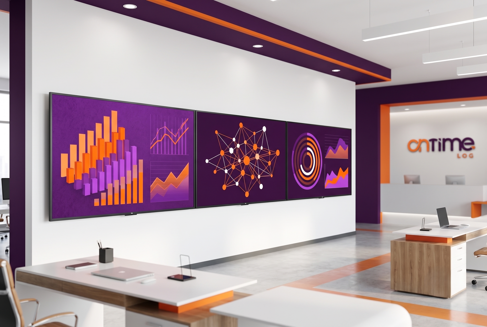
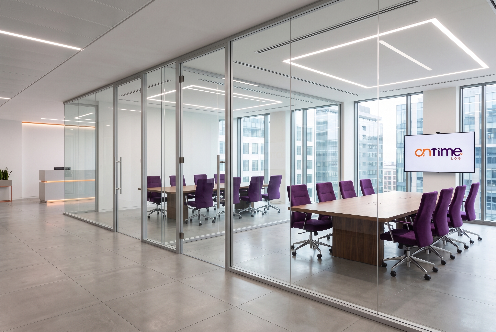

Conheça o Conecta | On Time
Bem-vindo ao Conecta, o novo Portal On Time
Este é o espaço que reúne tudo o que faz parte da nossa rotina. Aqui você encontra informações, ferramentas e conteúdos essenciais para acompanhar os principais movimentos da empresa, mantendo-se sempre atualizado e conectado.
Nosso objetivo é centralizar, em um único ambiente, tudo o que você precisa para o seu dia a dia, tornando o acesso às informações mais rápido, simples e organizado, além de fortalecer a comunicação entre as equipes.
O que você encontra aqui?
On Time Carreiras
Conheça as oportunidades disponíveis e acompanhe seu desenvolvimento profissional dentro da On Time.

Trilha de Desenvolvimento
Acesse conteúdos de capacitação, calendários de cursos e materiais de desenvolvimento.
Fique por dentro das campanhas, ações internas, eventos, datas comemorativas e iniciativas que fazem parte da nossa cultura.

Encontre diversos conteúdos, recursos e informações que facilitam sua rotina e mantêm você conectado ao universo On Time.
Um portal pensado para aproximar pessoas
Mais do que um ambiente de consulta, este portal foi criado para fortalecer nossa comunicação, compartilhar conhecimento e manter todos conectados ao que acontece na On Time.
Aqui você acompanha novidades, descobre oportunidades, participa das iniciativas da empresa e encontra informações importantes sempre que precisar.
Tudo em um só lugar. Simples, organizado e acessível para todos.